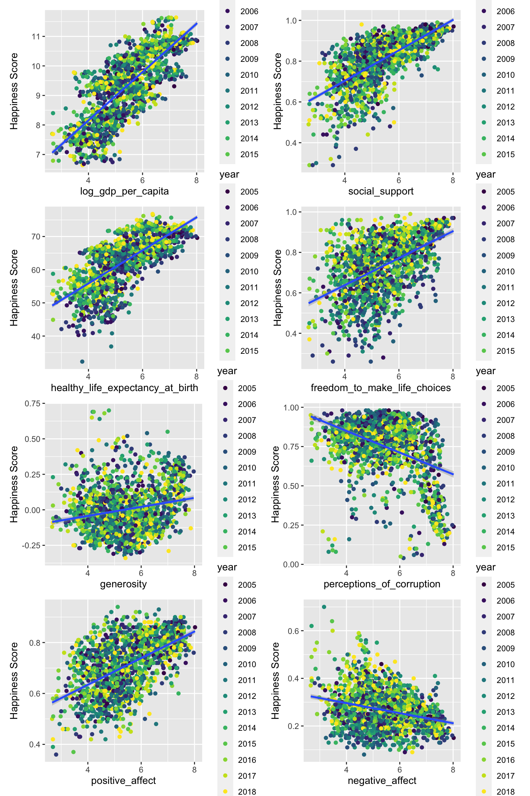

To better explore the relationship between happiness score and every factor, we made the linear regression plots and calculated related estimates. Further, we analyzed the result and derived to a more direct and accurate conclusion.
# Data Preparation
round2 = function(x){
if(is.numeric(x))
x= round(x, digits = 2)
return(x)
}
happy_df_fac = readxl::read_xls('DataPanelWHR2021C2.xls') %>%
janitor::clean_names() %>%
filter(year < 2019) %>%
map_dfc(round2) %>%
mutate(year = as.character(year))
# Graphic function
gg_factor = function(A,B,name){
ggplot(happy_df_fac, aes(x = A, y = B))+
geom_point(aes(color = year)) +
geom_smooth(method = "lm") +
labs(
x = name,
y = "Happiness Score",
)
}
# Plot
gg_log = gg_factor(A=happy_df_fac$life_ladder,B =happy_df_fac$log_gdp_per_capita, name = "log_gdp_per_capita")
gg_social = gg_factor(A=happy_df_fac$life_ladder,B =happy_df_fac$social_support, name = "social_support")
gg_healthy = gg_factor(A=happy_df_fac$life_ladder,B =happy_df_fac$healthy_life_expectancy_at_birth, name = "healthy_life_expectancy_at_birth")
gg_freedom = gg_factor(A=happy_df_fac$life_ladder,B =happy_df_fac$freedom_to_make_life_choices, name = "freedom_to_make_life_choices")
gg_generosity = gg_factor(A=happy_df_fac$life_ladder,B =happy_df_fac$generosity, name = "generosity")
gg_perceptions = gg_factor(A=happy_df_fac$life_ladder,B =happy_df_fac$perceptions_of_corruption, name = "perceptions_of_corruption")
gg_positive = gg_factor(A=happy_df_fac$life_ladder,B =happy_df_fac$positive_affect, name = "positive_affect")
gg_negative = gg_factor(A=happy_df_fac$life_ladder,B =happy_df_fac$negative_affect, name = "negative_affect")
As we can see in the plots, all the factors are related to the happiness score. People would feel happy if the country they live in have high GDP, strong social support, and they could be free to make life choices, also the country is generous and offering positive affect. On the contrary, if a country has a corrupt government, people wouldn’t be happy.
| slope | |
|---|---|
| (Intercept) | -2.4895803 |
| log_gdp_per_capita | 0.3972883 |
| social_support | 1.7170261 |
| healthy_life_expectancy_at_birth | 0.0250997 |
| freedom_to_make_life_choices | 0.3375901 |
| generosity | 0.4393421 |
| perceptions_of_corruption | -0.6843857 |
| positive_affect | 2.0860421 |
| negative_affect | 0.1432211 |
As shown in the table, strong social support as well as positive affect could largely encourage people to feel happy but corruption would make people unpleasant.
plot_log = plot_happy(A=happy_df_fac$life_ladder,B =happy_df_fac$log_gdp_per_capita, name = "log_gdp_per_capita")
plot_logThis plot shows a positive association between happiness scores and the statistics of GDP per capita in purchasing power parity.
plot_social = plot_happy(A=happy_df_fac$life_ladder,B =happy_df_fac$social_support, name = "social_support")
plot_socialThis plot shows a positive association between happiness scores and national average of social support.
plot_healthy = plot_happy(A=happy_df_fac$life_ladder,B =happy_df_fac$healthy_life_expectancy_at_birth, name = "healthy_life_expectancy_at_birth")
plot_healthyThis plot shows a positive association between happiness scores and healthy life expectancy at birth.
plot_freedom = plot_happy(A=happy_df_fac$life_ladder,B =happy_df_fac$freedom_to_make_life_choices, name = "freedom_to_make_life_choices")
plot_freedomThis plot shows a positive association between happiness scores and national average freedom to make life choices.
plot_generosity = plot_happy(A=happy_df_fac$life_ladder,B =happy_df_fac$generosity, name = "generosity")
plot_generosityThis plot shows a positive association between happiness scores and the residual of regressing national average of donation on GDP per capita.
plot_perceptions = plot_happy(A=happy_df_fac$life_ladder,B =happy_df_fac$perceptions_of_corruption, name = "perceptions_of_corruption")
plot_perceptionsThis plot shows a negative association between happiness scores and national average of corrpution perceptions.
plot_positive = plot_happy(A=happy_df_fac$life_ladder,B =happy_df_fac$positive_affect, name = "positive_affect")
plot_positiveThis plot shows a positive association between happiness scores and average of three positive affect measures in GWP: happiness, laugh and enjoyment.
plot_negative = plot_happy(A=happy_df_fac$life_ladder,B =happy_df_fac$negative_affect, name = "negative_affect")
plot_negativeThis plot shows a negative association between happiness scores and average of three negative affect measures in GWP: worry, sadness and anger.